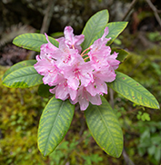

Hello Fresh Flowers!
A page about flowers in Washington State
There are many types of flowers in Washington, one important flower is the Coast Rhododendron which was selected in 1892 by Washington women to be the state flower. Residents wanted an official flower to be entered into the floral exhibit at the 1893 World's Fair in Chicago This means women voted on this before they had the right to officially vote!

Three common wildflowers in Washington state are...
- Asters most of the time they are small white flowers, but they can also be purple
- Arnica They are from the same family as Asters but typically grow like a carpet rather than in bunches. They are typically yellow or orange
- Jacobs Ladder these flowers grow in large bushes and are a light purple with a yellow center.
Built by Charity Emerson · BMIS 235